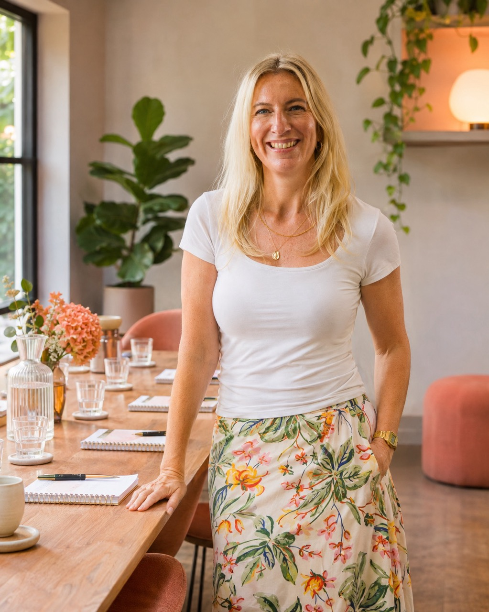
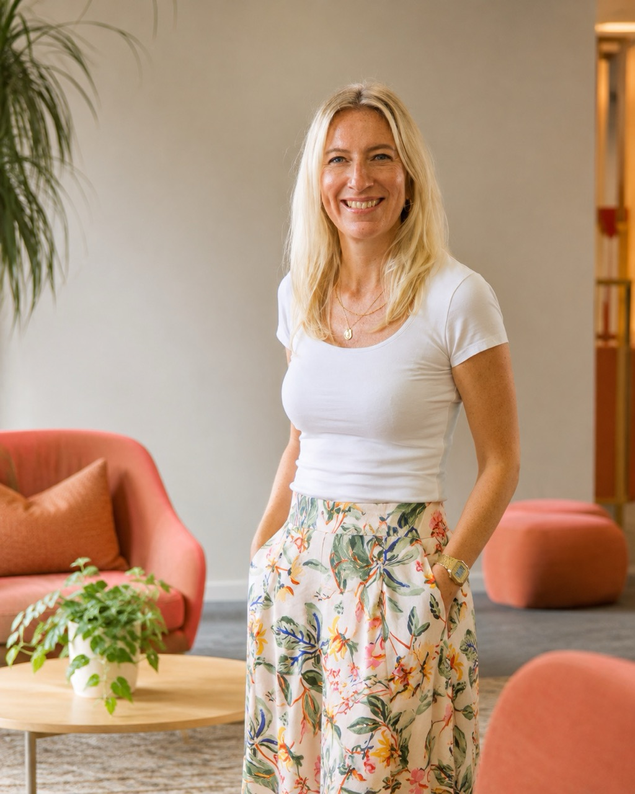

Counselling · Psychotherapy · Career coaching
Somewhere to think when life feels heavy or unclear
Online, across the United Kingdom
Where the work begins
You have been managing for a while now. From the outside it probably looks fine — work gets done, people get looked after. But something underneath has been quietly asking for attention.
I offer a calm, confidential space to explore anxiety, low mood, overwhelm, grief, and the transitions that reshape a life. This is counselling for adults who want space to think, not advice to follow.
Coping, managing and getting through are not the same as feeling well.
Reasons people get in touch
You might recognise some of this

- IAnxiety that hums in the background, or arrives without warning
- IILow mood, flatness, or a sense that things have lost their colour
- IIIStress and burnout from work or study that rest no longer seems to fix
- IVGrief and loss, including sudden or traumatic bereavement
- VA transition — a diagnosis, a change of direction, a loss of confidence — that needs room to be understood
You are functioning. You get up, you do what needs doing, you keep other people going. But the effort it takes has quietly gone up. Sleep is thinner. Patience is shorter. Things that used to feel manageable now feel like a lot.
None of that means something is wrong with you. Usually it means something has been carried alone for too long.
Two kinds of support
Counselling & career coaching
Counselling
A space to explore how you feel
Confidential, at a pace that suits you. Integrative and trauma-informed, drawing on person-centred, CBT-informed and solution-focused approaches — adapted to you rather than fitted to a rigid model.
It can help with anxiety and low mood, stress and burnout, grief and bereavement, confidence and self-esteem, life transitions, and neurodivergent identity.
Career coaching
Structured and forward-facing
For navigating a change of direction, a loss of confidence at work, a return after illness, or questions about purpose and next steps.
It is psychologically informed, because of my background in mental health — but it is not therapy, and it does not involve the treatment of mental health conditions.
What to expect
How I work
-
Confidentiality
What you bring to sessions stays between us
I keep brief, secure notes in line with professional and legal requirements, and your information is not shared without your consent — except in the rare circumstances where there is a serious concern about safety. A full privacy notice is available on request.
-
Collaboration
We decide together how the work goes
There is no fixed number of sessions, and we review things together as we go. I adapt the approach to you rather than applying one model to everybody.
-
Ethics
BACP framework, and regular supervision
I work under regular clinical supervision, where I reflect on my practice to make sure it stays safe and ethical. Clients are never identifiable. If another form of support would serve you better, I will say so and help with signposting.
About Catherine
Twenty years of sitting with people through change

I have spent over twenty years supporting people through change — across schools, colleges, universities, the NHS and the third sector. I currently work as a Mental Health Specialist in a university setting.
I trained at the University of East London on a BACP-accredited Postgraduate Diploma in Integrative Counselling and Psychotherapy, supported by a competitive scholarship, alongside a clinical placement within NHS Talking Therapies. I am a Registered Member of the BACP, working towards accreditation, and I practise under regular clinical supervision.
Qualifications & experience
- BACP Registered Member
- PGDip Integrative Counselling & Psychotherapy
- NHS Talking Therapies placement
- University Mental Health Specialist
- 20+ years in education & careers
- Trauma-informed practice
- Neurodiversity-affirming
- Bereavement & suicide-loss trained
You do not need to arrive with the right words. You only need to start.
No waiting list, no pressure
How it works
- 01You get in touch
Send an enquiry using the form below. I read every message myself and aim to respond within five working days.
- 02A short initial conversation
A brief, free conversation to explore what you are looking for and whether I am the right person to support you. No obligation to continue.
- 03Your first session
Fifty minutes, online by secure video. We start wherever feels manageable — you do not need to have prepared anything.
- 04We agree how to work
Counselling is usually weekly or fortnightly. Career coaching can be more flexible. We agree what suits you and review it as we go.
- 05We continue, at your pace
There is no fixed number of sessions. Some people come for short-term support around one issue; others prefer longer-term work.
Practical things
Fees & sessions
- £70
- Per fifty-minute session, for both counselling and career coaching. Any reduced-fee arrangements are discussed openly where appropriate.
- Online
- Sessions are held by secure video, across the UK — flexible and accessible, including for people who find it easier to talk from a familiar environment.
- No fixed end
- Some people come for short-term support around a specific issue; others prefer longer-term work. We review things together regularly.
Reply within five working days
Make an enquiry
Taking the first step can feel daunting, especially if you are already overwhelmed or unsure where to begin. You do not have to explain everything in the first message — a sentence or two is enough.